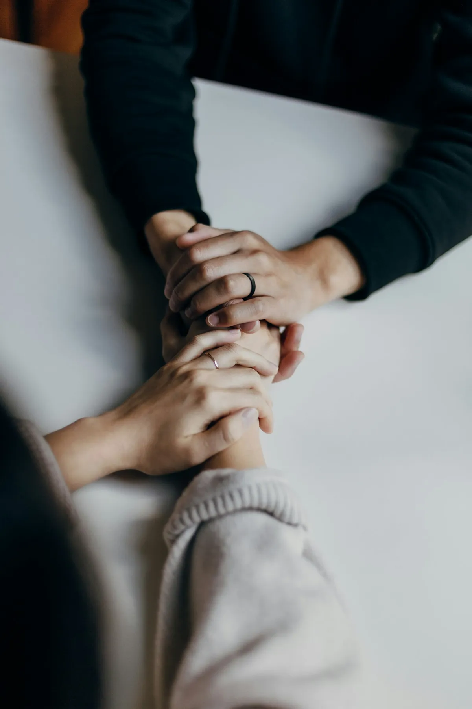
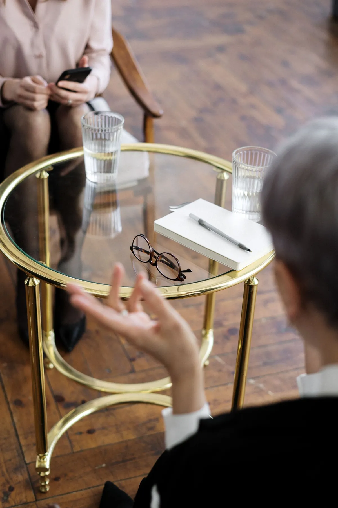
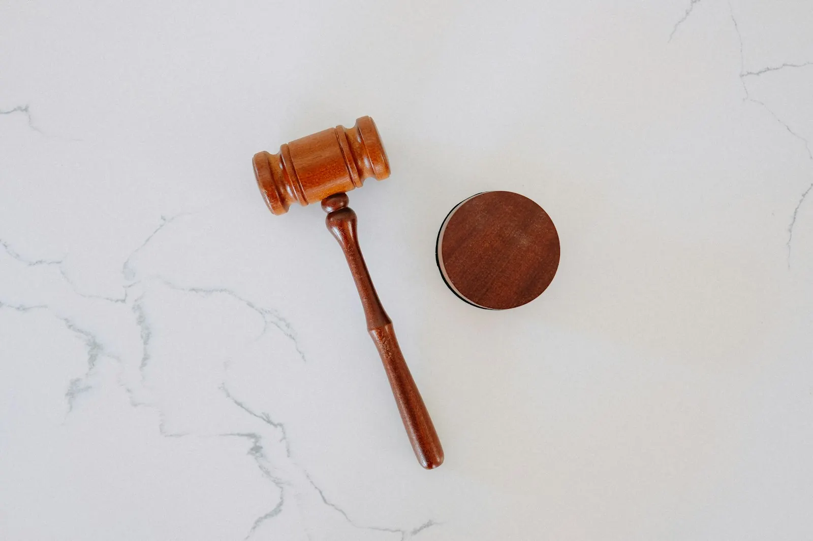
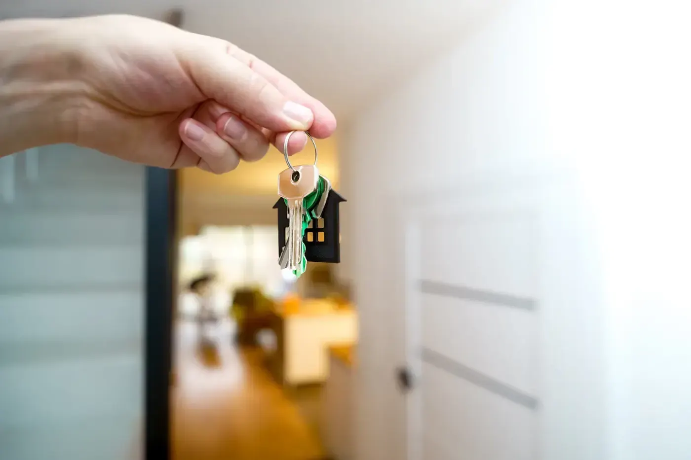

Bij mij bent u geen dossiernummer, maar een mens met een verhaal.
Ik ben advocaat in strafrecht, verkeersrecht, familierecht, jeugdrecht en huurrecht. U belt mij rechtstreeks, ik neem de tijd om te luisteren, en daarna zeg ik u eerlijk waar u staat.


op Google
Beste,
Wie bij mij binnenstapt, zit meestal met iets dat zwaar weegt. Op zo'n moment hebt u geen vakjargon nodig, maar iemand die naast u staat.
Een dagvaarding die in de bus viel. Een relatie die stopt, met kinderen die er middenin zitten. Een verhoor waar u met knikkende knieën naartoe moet. U wilt vooral weten waar u staat en wat er nu gaat gebeuren.
Daarom luister ik eerst. Pas daarna leg ik uw verhaal naast het dossier en de wet, en wat ik dan zie, zeg ik u zonder omwegen. Ook als het niet is wat u hoopte te horen. Kan het in der minne, dan zoek ik dat eerst. Moet het voor de rechter, dan ga ik er voluit voor.
Ik koos bewust voor een klein aantal rechtstakken, zodat ik daar echt in thuis ben. Mijn kantoor is aan de Leopoldlaan in Eeklo. U bent er welkom op afspraak.
Extra opleidingen
Cassatie in strafzakenBijzonder jeugdrechtSalduzBemiddeling
Vijf rechtstakken die ik door en door ken
Klik op wat bij u past. U leest waar het vaak over gaat, en wat ik voor u doe.
01
Strafrecht
Voor verdachten, en evengoed voor slachtoffers
Waar het vaak over gaat
Een uitnodiging voor verhoor, een arrestatie, een zaak voor de raadkamer, de kamer van inbeschuldigingstelling, de correctionele rechtbank, het hof van beroep of het hof van assisen.
Wat ik voor u doe
Ik sta naast u tijdens het verhoor, lees het dossier tot in de details en verdedig u op de zitting. Bent u slachtoffer, dan zorg ik dat uw stem gehoord wordt.
Leg me uw situatie voor02
Verkeersrecht
De politierechtbank, voor de straf en de schade
Waar het vaak over gaat
Te snel gereden, een ongeval met schade, of een rijverbod dat boven uw hoofd hangt. Op de zitting gaat het vaak sneller dan u verwacht, en wat u daar zegt, telt.
Wat ik voor u doe
Ik lees het proces-verbaal met u door, bekijk of er verweer mogelijk is of een mildere straf, en pleit voor u. Ook de schade na een ongeval volg ik op.
Leg me uw situatie voor03
Familierecht
Scheiding, kinderen en onderhoudsgeld
Waar het vaak over gaat
Er moet ineens veel tegelijk geregeld worden: waar de kinderen wonen, wie wat betaalt, wat er met het huis gebeurt. En dat op een moment dat het emotioneel al zwaar genoeg is.
Wat ik voor u doe
Ik zet alles met u op een rij en zoek eerst naar een akkoord waar u allebei mee verder kan. Lukt dat niet, dan sta ik u bij voor de familierechtbank.
Leg me uw situatie voor04
Jeugdrecht
Voor kind en ouders, bij de jeugdrechter
Waar het vaak over gaat
Een verontrustende opvoedingssituatie, of feiten die een minderjarige gepleegd heeft. Als ouder wilt u vooral weten wat er met uw kind gaat gebeuren.
Wat ik voor u doe
Ik leg in gewone woorden uit wat de jeugdrechter kan beslissen, bereid de zitting met u voor en ben erbij op de dag zelf.
Leg me uw situatie voor05
Huurrecht
Huur, waarborg, opzeg en schade
Waar het vaak over gaat
Een aangetekende brief over achterstallige huur, een waarborg die maar niet terugkomt, of een opzeg waar u het niet mee eens bent.
Wat ik voor u doe
Ik kijk wat er in uw huurcontract staat en wat de wet zegt. Vaak lost een duidelijke brief al veel op, nog voor het tot een rechtszaak komt.
Leg me uw situatie voorSamen aan tafel, stap voor stap
U hoeft niets voor te bereiden. Breng mee wat u hebt: een brief, een dagvaarding, of gewoon uw verhaal.
U vertelt
Ik luister en stel de vragen die ertoe doen. Zonder oordeel, en zonder haast.
Ik zeg eerlijk waar u staat
U hoort wat er mogelijk is, en ook wat niet. In woorden die u begrijpt.
We kiezen samen
Een akkoord als het kan, de rechtbank als het moet. Elke stap bespreek ik vooraf met u.
gemiddeld uit 16 reviews op Google
“Heel menselijk zonder oordeel super lief en heel eerlijk, vecht als een leeuwin voor haar cliënten.”
Gwendoline Schenkkan · review op Google
“Snel geholpen met duidelijke uitleg. Ook inhoudelijk bijzonder sterk in haar dossiers.”
“Topadvocate die er geen gras laat over groeien en geen doekjes om windt.”
Wat kost een advocaat?
Een terechte vraag. Mijn uurloon hangt af van de aard, de moeilijkheid en de omvang van uw zaak, en ik houd ook rekening met uw financiële mogelijkheden. U weet vooraf waar u aan toe bent.
Duidelijke afspraken
Een schriftelijke overeenkomst met het uurloon en de kosten.
Een provisie
U betaalt een voorschot, dat later met het ereloon verrekend wordt.
Geregeld nieuws
U hoort hoe uw zaak loopt, zonder dat u erom moet vragen.
Laten we even praten
Bel me rechtstreeks, of laat hiernaast een paar zinnen achter. Ik neem zelf contact met u op.
- Kantoor
- Leopoldlaan 57, 9900 Eeklo
- Vaste lijn
- 09 259 99 69
- info@advocaatdemaitre.be
Langskomen kan op afspraak. Tot binnenkort!
Stuur me een bericht
Een paar zinnen volstaan.